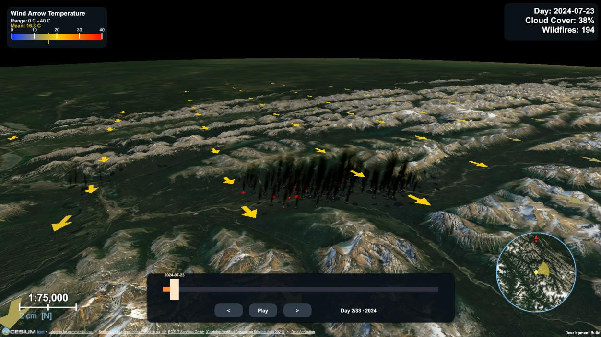

Application Screenshots

Desktop reference build — full feature set, including accumulated burn scars and the minimap/compass.

Browser (WebGL) build — the reduced-feature build participants actually evaluated, reachable via a single link.
User Evaluation Study
The thesis's empirical evaluation is a comparative user study with 68 participants. Each participant explored three tools in turn, one presenting the 2024 Jasper wildfire through this Unity WebGL build, one presenting the August 2022 Serra da Estrela fire (Portugal) through an ArcGIS Online Experience Builder application, and one presenting the June 2022 Sierra de la Culebra fire (Spain) through kepler.gl — a terrain-free browser dashboard used as a methodological control. Each tool was paired with a different real MODIS-derived event of comparable scale and mountainous terrain, specifically to prevent participants from answering later comprehension questions from what they'd already learned about an earlier tool.
What Was Measured
- Comprehension — four factual questions (event duration, detections on a stated date, day of greatest activity, terrain description), scored against a predefined answer key and recorded only for the first tool each participant saw, so the score isn't inflated by task familiarity.
- Adapted usability — a ten-item System Usability Scale (0–100), with four items reworded for a wildfire visualization; recorded for every tool.
- Rating items — six five-point items on location identification, day-to-day change, terrain context, distinguishing detections from effects, marker-intensity meaning, and sustained attention.
- Open-ended responses — three free-text questions asked once, after all three tools, on what worked, what confused, and what to improve.
Procedure
The study ran entirely online via six versions of a Google Form, one per presentation order, so that roughly a third of participants saw each tool first (21 began with kepler.gl, 24 with the Experience Builder, 23 with the Unity application). Each participant was given the same guided task — locate the affected area, follow the fire across days, identify the day of greatest activity — before answering that tool's questionnaire block.
Headline Finding: Terrain Is a Precondition, Not a Decoration
The strongest and clearest result in the study concerns the terrain-description comprehension item. Participants using kepler.gl, which renders no elevation surface, described the (in fact mountainous) landscape correctly in only 9.5% of cases — and every single incorrect answer confidently selected "flat lowland," with none expressing uncertainty. Both terrain-based tools were answered almost perfectly.
Association between tool and accuracy: χ² = 54.68, df = 2, p < 0.001.
Comprehension
Scored on the first tool each participant encountered, the mean comprehension score (out of four) was 3.30 for the Unity application, 3.04 for the ArcGIS Online Experience Builder, and 2.43 for kepler.gl — a significant difference (Kruskal-Wallis H = 9.41, df = 2, p = 0.009), driven almost entirely by the terrain item above.
| Item | kepler.gl | ArcGIS Online | Unity application |
|---|---|---|---|
| Number of days | 85.7% | 62.5% | 60.9% |
| Detections on a stated date | 61.9% | 58.3% | 82.6% |
| Day of greatest activity | 85.7% | 83.3% | 91.3% |
| Terrain description | 9.5% | 100.0% | 95.7% |
Usability vs. Rating: Two Different Stories
Communicative effectiveness and interface usability separated cleanly. The Unity application was rated as favorably as the commercial ArcGIS Online platform on the qualities the visualization was designed to deliver (p = 0.692 on the overall rating measure), while scoring significantly lower on adapted usability than that same platform (p = 0.023). It was not a weaker communicator that participants tolerated — it was an equally effective communicator that participants found harder to operate.
| Tool | n | Adapted usability (0–100) | Mean rating (1–5) |
|---|---|---|---|
| kepler.gl | 21 | 61.90 | 3.39 |
| ArcGIS Online Experience Builder | 24 | 74.38 | 4.08 |
| Unity application | 23 | 63.70 | 3.99 |
Per-Item Ratings (1–5 scale)
| Item | kepler.gl | ArcGIS Online | Unity application |
|---|---|---|---|
| Location could be identified | 4.14 | 4.38 | 4.22 |
| Day-to-day change could be followed | 3.90 | 4.33 | 4.17 |
| Terrain provided spatial context | 2.52 | 4.17 | 4.30 |
| Detections distinguished from effects | 3.43 | 3.96 | 3.78 |
| Meaning of marker differences was clear | 3.10 | 3.83 | 3.30 |
| Attention was held throughout | 3.24 | 3.83 | 4.17 |
The Unity application scored highest of the three tools on both terrain context and sustained attention — its two strongest results — while the clarity of marker-intensity differences was its lowest-rated property (not statistically significant, but the most frequent qualitative complaint; see below).
The Usability Gap Is an Onboarding Problem
Pooling every participant's rating of every tool (not just the first seen) shows the Unity application's adapted usability score rising steadily with prior experience, while the commercial platform stays flat:
| Prior 3D/game experience | n | kepler.gl | ArcGIS Online | Unity application |
|---|---|---|---|---|
| None or rare | 23 | 62.4 | 80.4 | 56.8 |
| Occasional | 26 | 59.8 | 76.1 | 61.7 |
| Frequent | 19 | 62.1 | 82.1 | 72.1 |
Critically, the rating measures show no equivalent gradient — participants who struggled to move through the 3D scene were still able to correctly read what it displayed. Open responses located the friction precisely in navigation: 18 of 68 participants described the keyboard-driven camera as difficult (far more than either comparator drew), several wanted the mouse-drag map interaction they expected, and several lost their bearings before locating the fire — pointing to a fixable onboarding/interaction design issue rather than a flaw in the visualization itself.
What Participants Said
- Most praised (all tools): the day-by-day time-lapse (31 of 68 participants) and terrain representation (27 of 68) — five participants explicitly named the lack of elevation in kepler.gl as a shortcoming.
- Most criticized (Unity): camera/navigation difficulty (18 participants) — wanting conventional mouse drag-and-scroll, and needing to travel to locate the fire on entry.
- Requested improvement (Unity): a legend for what marker size/color actually encodes (8 participants) — the wind-arrow temperature legend already exists in both builds, but no equivalent legend explains fire radiative power / marker scaling.
- Technical issues: 7 of 68 participants reported browser-build problems (slower loading, needing a refresh, one crash) tied to the WebGL build's cross-origin-isolation requirements.
Implemented System Components
Data Acquisition (Python)
- Day-by-day MODIS Collection 6.1 queries over the Jasper bounding box, with retry + exponential backoff
- CSV and point shapefile (EPSG:4326) export, plus a nominal-confidence-and-above (≥30%) filtered subset
- Open-Meteo sampling on a 1° grid (capped at 16 points/run) for daily temperature, wind and cloud cover
Core Visualisation Engine (Unity)
- NetTopologySuite shapefile reader feeding the WGS84 → ECEF → Unity world-space coordinate pipeline via Cesium for Unity
- Terrain-readiness spawn gate (75% raycast hit ratio over two stable passes; exponential backoff up to 15 attempts)
- Radius/time-window fire clustering with FRP- and density-weighted marker scaling
- Day-by-day Timeline playback with cross-fade transitions between days
Weather Overlays
- Wind-arrow grid over the terrain, oriented by direction, scaled by speed, coloured by temperature
- Per-marker particle sway reflecting the nearest wind vector
- Cloud-cover percentage readout in the timeline HUD
Camera, UI and Deployment
- Free-fly WASD/mouse camera (desktop) and a map-style drag-look camera with a "Go to Fire" button (WebGL)
- Timeline bar, cloud/wind readouts, and hotkeys [1]–[4] for playback and overlay toggling
- WebGL build served with COOP/COEP cross-origin-isolation headers for Cesium's multi-threading
Scope and Design Limitations
- Descriptive, not predictive — The platform performs data-driven descriptive and visual modeling of satellite-derived fire observations; it reconstructs what MODIS has already recorded and does not forecast fire behaviour or model physical fire spread.
- Convenience sample — The study's 68 participants are not a probability sample of a defined population, so results are read as indicative tendencies rather than generalisable population estimates; three background subgroups contained fewer than 10 participants.
- Different scenario per tool — Each tool presented a different real wildfire event (necessary to prevent a learning effect across the three comprehension questions), so part of a comprehension difference could in principle reflect the event rather than the tool, though all three were matched on order-of-magnitude burned area and mountainous protected-area terrain.
- Tool equivalence — kepler.gl, the ArcGIS Online Experience Builder, and the Unity build differ in camera behaviour and interaction style independent of the data they present, so part of the usability gap may reflect general interface maturity rather than a property specific to wildfire visualization.
- Reduced browser build — Participants evaluated the WebGL deployment, not the full-featured desktop reference build (no burn scars/smoke, no minimap, no launch configuration), so the reported results are a lower bound on what the pipeline can communicate.
- Adapted usability scale — Four of the ten System Usability Scale items were reworded for a wildfire visualization (one also changed polarity), so the resulting score is not directly comparable to published SUS benchmarks.